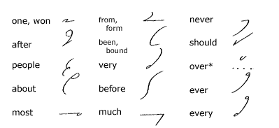
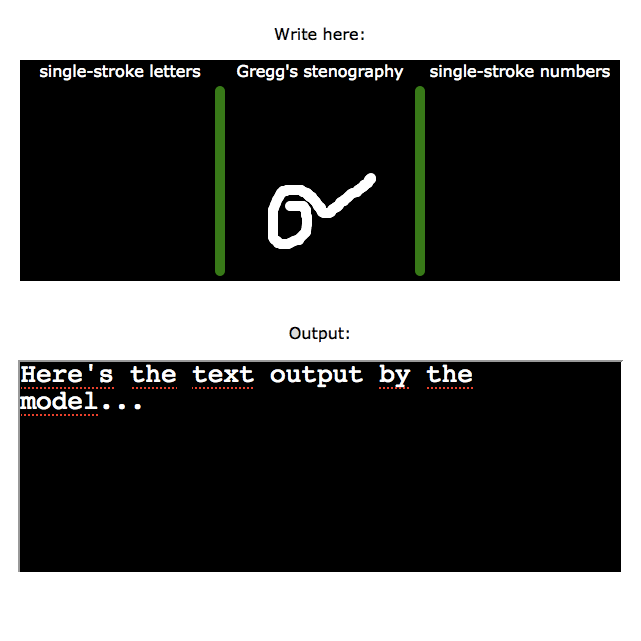

Optical Character Recognition for Gregg's stenography
Using deep neural networks to read shorthand February 10, 2019
Gregg's stenography is one of the most widely used shorthand writing systems for the English language, with tens of thousands of users worldwide. Unfortunately, no complete Optical Character Recognition model exists for transcribing handwritten Gregg's shorthand into typewritten text, although there have been some academic works modelling a limited number of characters or different shorthand systems.[1], [2], [3]
Gregg's shorthand is a combination of "brief forms" (symbolic abbreviations for common words) and a phonetic alphabet (symbols which are combined together to form longer words for which no brief form exists).
Goal of the project: Build a working prototype with an OCR model that can recognise 300 brief forms
Long-term goal: an Android virtual keyboard app that can interpret Gregg's stenography
Context and principal challenges
- Because shorthand uses highly simplified symbols, there is no redunancy in the encoded information, therefore the recognition task is much more difficult than with regular longhand handwriting. (Humans also find shorthand much more difficult to read than regular handwriting because of this lack of redundancy.)
- Unlike in regular handwriting, the meaning of Gregg's shorthand symbols depends not only on the shape but also on the relative size of the characters. Therefore it's not possible to unambiguously recognise each character or word in isolation, but only in the context of a longer written text.
- Lack of data: existing printed dictionaries of Gregg's shorthand are difficult to digitize because of the highly dense unstructured format.
- In long form words (words for which there is no brief form), an alphabet of symbols representing phonetic sounds are chained together to form words. However, the overlapping shape of the combined symbols on the page is such that it is difficult to segment them into individual characters.
Machine learning model
Source code: https://github.com/acfogarty/stenography
Basic functionality - brief forms
- Extract image from html5 canvas interface.
- Crop image to the bounding box containing the written pixels forming the stenographic symbol.
- Feed the cropped image into a convolutional neural network with a softmax output layer.
- If the softmax output layer indicates several possible short-form transcriptions with similar probabilities, use a word-based language model to distinguish between them.
- If the image is not a recognised brief form, use the long-form model (see below).
Advanced functionality - long forms (TODO)
- Segment long-form words into individual characters.
- Transcribe the individual characters using a convolutional neural network with softmax output (each character can map to multiple English letters).
- Use both character-based and word-based language models to reconstruct the transcribed English word.
- Alternative: use recurrent neural network to transcribe sequence of individual characters.
Tech stack
- Simple feedforward neural network encoded from scratch in Python (numpy) for training the model (forward and backprop), and in JavaScript for the prototype webapp (forward propogation only).
- Convolutional neural network in TensorFlow for training the model, and in TensorFlow.js for the prototype webapp using the pre-trained model.
- Python (nltk) for the Kneser-Ney N-gram language model.
- Html5 canvas and vanilla JavaScript for the webapp interface.
Version 1: recognising a limited number of brief forms
Recognising brief forms is a typical supervised learning classification problem, similar to e.g. handwritten digit recognition. The only difficulty comes from the large number of classes and limited data. Standard Gregg's shorthand contains hundreds of commonly used brief forms. In V1 of the model we have only 7 classes (7 different brief forms recognised).
A simple feedforward neural network with two layers already achieves 85% accuracy with less than a thousand training set examples.
Version 2: recognising a greater number of brief forms
Increase the number of classes to 100. Increase the training set size by a factor of 10. Switch to a convolutional neural network.
Version 3: including context of surrounding tokens
Some of the brief forms can correspond to several different English words with similar prononciation. For example, their, there and they're all have the same brief form in Gregg's shorthand.
Also, the interpretation of some of the brief forms depends on the relative size of the written character, e.g. or and will have the same brief form except that will is written with a longer stroke than or. When taking the brief forms one by one, as in the V1 and V2 classifiers, it's impossible to judge their relative size.
A human reader uses the context of the surrounding text to disambiguate these cases. Here, we do the same thing using an N-gram language model to choose the most probable interpretation based on the context of the preceding words.
Future versions
Long-form words are composed of several individual phonetic characters chained together and must be segmented before the individual characters can be recognised. Should we use a recurrent neural network on the sequence, or convolutional neural network on individual characters + N-gram-based language model for context? To Be Decided...
It will also be necessary to take scanned pdfs of Gregg's shorthand dictionaries and manuals, detect handwritten shorthand and typewritten longhand on pages which contain both, and build a larger dataset of labelled examples.
Current prototype
Current prototype (v1) can be found here.
